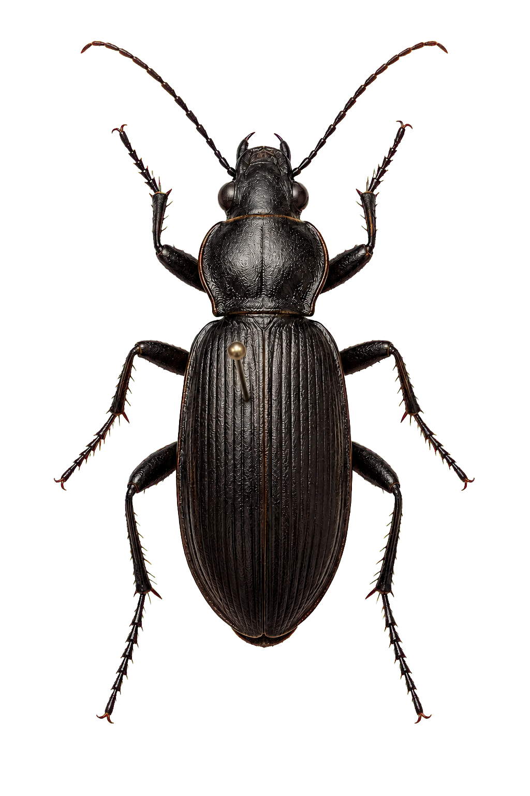

01
Available
Field records
EntoField
Create collecting events, capture locality and habitat data, then add every specimen collected at that event.
- Mobile-friendly
- Event-based records
- Export-ready
Open-source entomology toolkit
From field notes to clean data, identification and printable labels—one connected workflow for every specimen.

One specimen · one connected journey
Use one tool or follow the whole path. The same familiar specimen data moves with you.
Collect events and specimens in the field.
Find gaps, inconsistencies and formatting problems.
Document determinations and their evidence.
Turn specimen data into printable labels.
Choose your starting point
Each EntoKit tool solves one concrete collection problem. Use them separately or let the same spreadsheet connect the whole journey.
Field records
Create collecting events, capture locality and habitat data, then add every specimen collected at that event.
Data quality
Upload a specimen table and reveal missing IDs, inconsistent dates, coordinate problems and duplicated records.
Identification
Record what a specimen was identified as, who determined it and which characters or references support the decision.
Collection labels
Turn Excel or CSV specimen data into precise collection and determination labels, arranged on a printable A4 PDF.
Built around specimens, not platforms
EntoKit is an open collection of focused tools for field entomologists, students, private collectors and small scientific collections. No closed database is required: familiar spreadsheet files carry your work from one step to the next.
Source code that can be studied, adapted and improved.
Start with the tool that solves today's problem.
Excel and CSV remain the bridge between every step.
Free and open source
EntoKit is growing tool by tool. Each application can keep its own repository and release cycle.
View the source